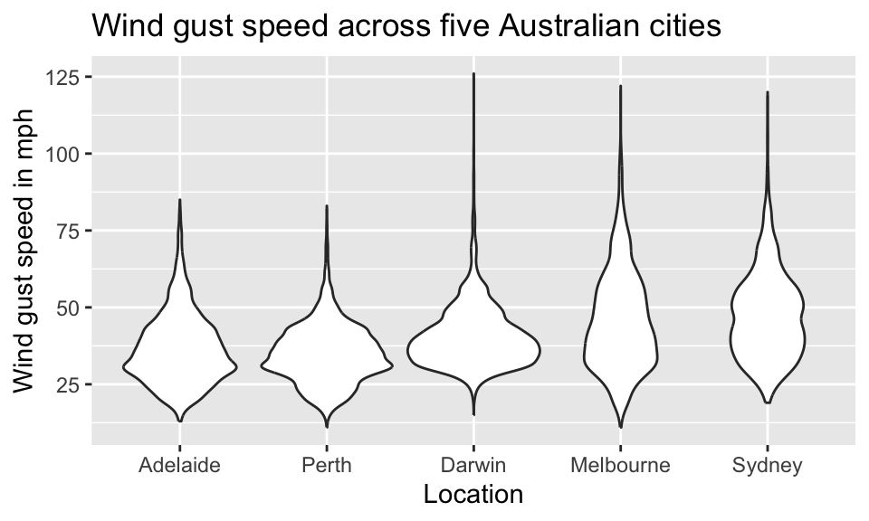

library(dplyr)
library(lubridate)
library(ggplot2)
library(patchwork)Analysis of Australian weather data
Loading and cleaning the data
AUS <- read.csv( "WeatherAustralia.csv" )
AUS$Date <- as_date( AUS$Date, format="%d/%m/%Y" )
glimpse( AUS )Rows: 15,781
Columns: 6
$ Date <date> 2009-01-01, 2009-01-02, 2009-01-03, 2009-01-04, 2009-01…
$ Location <chr> "Sydney", "Sydney", "Sydney", "Sydney", "Sydney", "Sydne…
$ MinTemp <dbl> 17.7, 18.5, 16.9, 18.7, 20.2, 19.9, 20.6, 20.2, 17.4, 16…
$ MaxTemp <dbl> 35.1, 23.0, 23.2, 27.1, 31.6, 29.7, 34.9, 21.7, 22.9, 24…
$ Rainfall <dbl> 0.0, 0.0, 0.0, 0.0, 0.0, 0.0, 0.0, 0.2, 0.0, 0.0, 0.0, 0…
$ WindGustSpeed <int> 72, 63, NA, 65, 63, 41, 59, 56, 50, 48, 54, 39, 59, 67, …We can extract the list of locations using
AUS %>% distinct( Location ) Location
1 Sydney
2 Melbourne
3 Adelaide
4 Perth
5 DarwinAnalysis of Minimum vs Maximum temperature
Setting up the canvas
PlotAUS <- ggplot( AUS, aes( x=MinTemp, y=MaxTemp ) )
PlotAUS
Scatter plot
PlotAUS + geom_point()Warning: Removed 489 rows containing missing values or values outside the scale range
(`geom_point()`).
Scatter plot - Adding visual cues
PlotAUS + geom_point( aes( shape=Location, color=Location ) )
Scatter plot - Facets
PlotAUS + geom_point() +
facet_wrap( ~Location ) +
labs( x="Minimum daily temperature", y="Maximum daily temperature" )
Line plot - Maximum daily temperature over time
Let’s create a line plot for the city of Darwin:
Darwin <- AUS %>% filter( Location == "Darwin" )
ggplot( Darwin, aes(x=Date, y=MaxTemp ) ) + geom_line() +
labs( x="Date", y="Maximum daily temperature", title = "Darwin" )
We can again use facets to create a subplot for each city:
ggplot( AUS, aes( x=Date, y=MaxTemp ) ) + facet_wrap( ~Location ) +
geom_line( aes( color=Location, linetype=Location ) ) +
labs( x="Date", y="Maximum daily temperature" )
Analysis of wind gust speed
Histogram for Darwin
We use geom_histogram() to create a single histogram
ggplot( Darwin, aes( x=WindGustSpeed ) ) + geom_histogram( bins=20 ) +
labs( x="Speed of wind gust in km/h", y="Count", title = "Darwin" )
Density plot
Let’s compare histogram and density plot
ggplot( Darwin, aes( x=WindGustSpeed ) ) +
geom_histogram( aes(y=..density..), alpha=0.5, bins=20 ) +
geom_density( size=1.2, color="red" ) +
labs( x="Speed of wind gust in km/h", y="Density", title = "Darwin" )
WeatherAD <- filter( AUS, Location %in% c("Adelaide","Darwin") )
ggplot( WeatherAD, aes( x=WindGustSpeed ) ) +
geom_density( aes( linetype=Location, color=Location ), size=1.2 ) +
labs( x="Speed of wind gust in km/h", y="Density" )
Box plots
ggplot( AUS, aes( x=Location, y=WindGustSpeed ) ) +
geom_boxplot( aes( fill=Location ) ) +
labs( y="Speed of wind gust in km/h" )
Violin plots
ggplot( AUS, aes( x=reorder(Location, WindGustSpeed, median, na.rm=TRUE),
y=WindGustSpeed ) ) + geom_violin() +
labs( x="Location", y="Wind gust speed in mph",
title="Wind gust speed across five Australian cities" )